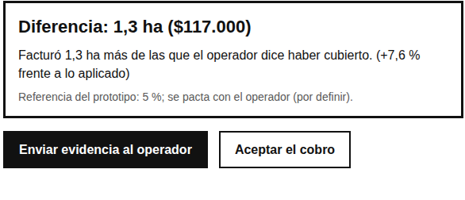
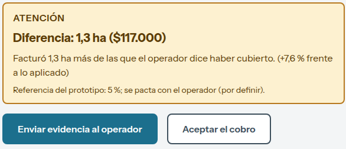
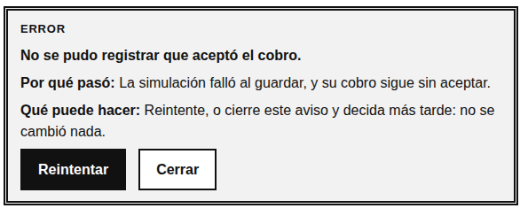
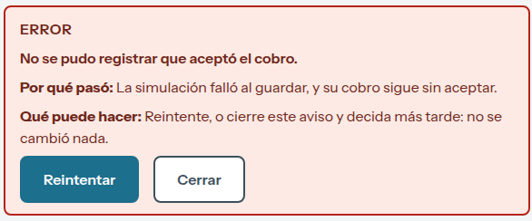
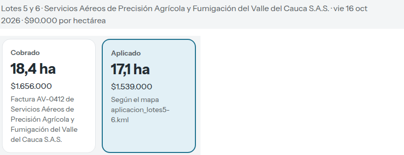
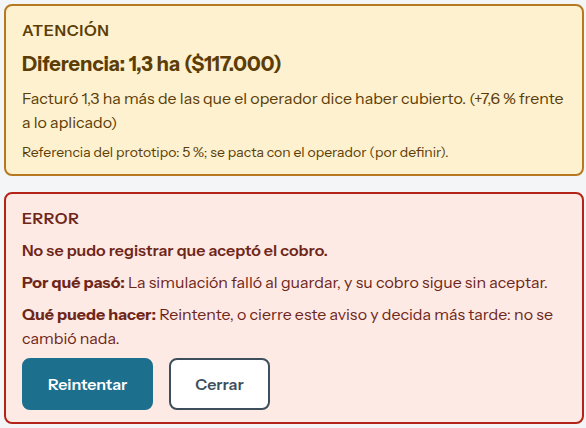

Otear: prototipo de alta fidelidad y auditoría del diseño final
Semana 3: Prototipado de Alta Fidelidad e Interactividad Avanzada
Luis Manuel Rojas Correa
Código A00399289
Universidad Icesi
Prototipado (2026-2) MCUX
Nicolás Salom
8 de noviembre de 2026
Otear: prototipo de alta fidelidad y auditoría del diseño final
Qué se entrega y dónde se comprueba
Este trabajo lleva a alta fidelidad el prototipo funcional de la Semana 2 (S2; Rojas Correa, 2026c): el flujo «Verificar el cobro de una labor contratada» de Hernando, de 56 años, administrador de la Hacienda Santa Rita (Rojas Correa, 2026a). No creé un proyecto nuevo ni cambié el flujo (mismas tres pantallas, lógica y datos); cambió la capa visual y de estados, que ahora sale de un sistema de diseño. La Tabla 1 resume los entregables y cómo comprobarlos. El prototipo, el video, el repositorio y el UI Kit están en las Referencias (Rojas Correa, 2026b, 2026d, 2026e, 2026f).
Tabla 1Entregables de la Semana 3 y cómo verificarlos
Entregable
Dónde está y qué se puede comprobar
UI Kit en Figma
Página «_UI Kit»: 20 estilos de color, 5 estilos de texto (Heading, Body, Caption), escala de espaciado 4-8-12-16-24-32, 3 radios, el estilo de efecto «Focus/Ring» y 30 componentes con el estado en el nombre (Button/Primary/Default, Alert/Error, Badge/Status/Success…): Button (Primary y Secondary × Default, Hover, Focus, Disabled, Loading; Link × los mismos sin Loading), Field/Text (Default, Focus, Disabled, Error, Success), Alert (Info, Loading, Success, Warning, Error), Badge/Status (4) y ButtonWithReason (2). Sin Variants ni Variables de Figma, como pide la consigna. El kit se escribió en Figma con el Model Context Protocol (MCP) oficial desde Claude Code.
Design system para la IA
La ruta obligatoria para la inteligencia artificial (IA) es la A (AGENTS.md): la sección «Sistema de diseño del prototipo» reúne las reglas, la tabla Figma ↔ código, las micro-interacciones y los mensajes de commit. Los valores están en theme.json (54 variables de hojas de estilo en cascada [CSS], generadas; fuente única). npm run theme genera las variables CSS y npm test falla si el CSS tiene un color, tamaño de letra o duración escritos a mano.
Sistema aplicado al repositorio de S2
Es el mismo repositorio. Todo color, tamaño de letra, espacio, radio, grosor de borde y duración de prototype.module.css sale de var(--ds-*); solo quedan literales las medidas de la rejilla de la pantalla (232, 380 y 480 px). Cada componente lleva su nombre del UI Kit en data-ds. La lógica de verificación y sus 16 pruebas no cambiaron.
Micro-interacciones
Dos momentos críticos con tres estados cada uno (inicial, carga y feedback), diseñados en Figma (Figura 1) y construidos en código: «Comparar» y «Aceptar el cobro».
URL pública
GitHub → Cloudflare Pages (despliegue automático al subir a main), sin pantallas sin salida.
Análisis teórico: el sistema de diseño como especificación que la IA ejecuta
Un design system no es un archivo de Figma bonito: es una especificación que la IA ejecuta, y su calidad se mide en qué tan bien la aplica el agente. Sin ella, la IA genera CSS arbitrario. Por eso los valores viven en un archivo legible por máquina (theme.json), las reglas en AGENTS.md y los nombres coinciden entre Figma y el código, y por eso la aplicación se verifica con una prueba automática, no a ojo.
Los criterios salen de fuentes que se pueden citar. Las 10 heurísticas de usabilidad de Nielsen (1994) me sirvieron para decidir qué cambiar. Las Web Content Accessibility Guidelines (WCAG) 2.2 (World Wide Web Consortium [W3C], 2024) aportan el contraste (1.4.3 y 1.4.11), no depender solo del color (1.4.1) y el tamaño del objetivo (2.5.8). Los tres límites de tiempo de respuesta de Nielsen (1993) dicen que 0,1 s se siente instantáneo, 1 s no interrumpe el pensamiento y 10 s agota la atención. De ahí salen las reglas de movimiento del sistema: el estado de carga aparece en menos de 100 ms y los cambios de estado duran 250 ms con curva de salida suave, lo bastante rápido para sentirse como respuesta y lo bastante lento para verse. Con «reducir movimiento» activado todo es instantáneo.
Figura 1Micro-interacciones en la página «_UI Kit» de Figma
Nota. «Comparar» y «Aceptar el cobro», con estado inicial, de carga y de feedback (éxito y error), hechas con instancias del kit.
Tres decisiones de diseño
Cada decisión va en el mismo orden: qué se modificó, antes y después, principio aplicado (heurística de Nielsen, 1994) y justificación. Las figuras son recortes de capturas de «Verificar el cobro» (1280 × 1000 px) tomadas con capture-prototype.mjs; las Figuras 2 y 5a unen dos zonas de la misma pantalla.
Decisión 1. El estado de carga vive en el mismo botón y dice lo que pasaHeurística #1
Qué se modificó. El botón «Comparando…» era un recuadro gris con rayas y sin ningún indicador de movimiento. Ahora es el mismo Button/Primary, con un indicador que gira y el gerundio, y el aviso Alert/Loading lleva la palabra «Cargando» y el mismo indicador (Figura 2).
Figura 2Decisión 1, estado de carga: antes (S2) y después
Principio aplicado. Heurística #1 Visibilidad del estado del sistema (Nielsen, 1994): la persona siempre debe saber qué está haciendo el sistema.
Justificación. Sin una señal de que el clic fue recibido, Hernando puede dudar y volver a pulsar; con un indicador que se mueve y una palabra, confirma de inmediato que el sistema trabaja. Medí con capture-prototype.mjs el tiempo hasta que aparece el estado de carga: 4–5 ms después del clic en S2 y 13–14 ms en la versión final. Los dos cumplen el criterio de 100 ms (Nielsen, 1993), así que la mejora no es de velocidad sino de claridad.
Decisión 2. Un solo componente de aviso para todos los estados, incluido el veredictoHeurística #4
Qué se modificó. El veredicto de la comparación era una caja con borde negro de 3 px distinta de todos los demás avisos. Ahora usa la misma familia Alert (Success, Warning, Info), cada una con su palabra («Listo», «Atención», «Aviso»), y el estado de las labores pasó de etiquetas grises a Badge/Status (Figura 3).
Figura 3Decisión 2, veredicto de la comparación: antes (S2) y después
Antes (S2)

El veredicto no se parece a ningún otro aviso; los estados se distinguen solo por el trazo.
Después

Alert/Warning («Atención») con la acción principal en Button/Primary.
Principio aplicado. Heurística #4 Consistencia y estándares (Nielsen, 1994): lo que significa lo mismo debe verse y comportarse igual en todo el sistema.
Justificación. Cuando lo mismo se ve igual en toda la pantalla, la persona aprende una vez qué significa un aviso ámbar o uno verde y deja de releerlos. El color refuerza pero no sustituye: cada aviso lleva su palabra y una forma de borde (criterio 1.4.1; W3C, 2024), de modo que sigue siendo legible en escala de grises o con daltonismo. Además, los textos pasaron de 13 px a un piso de 14 px: de 8–12 elementos por pantalla con texto menor a 14 px a ninguno.
Decisión 3. El error dice qué pasó, por qué y qué hacer, y deja una salidaHeurística #9
Qué se modificó. El error al registrar la aceptación tenía borde doble gris, igual de pesado que un éxito o un aviso. Ahora es Alert/Error: fondo y borde rojos, la palabra «Error», el texto de «Por qué pasó» y «Qué puede hacer» y el botón primario «Reintentar» junto a «Cerrar» (Figura 4).
Figura 4Decisión 3, error al aceptar el cobro: antes (S2) y después
Antes (S2)

El error es un recuadro de borde doble que se parece a los demás.
Después

Alert/Error con salida clara (Reintentar).
Principio aplicado. Heurística #9 Ayudar a los usuarios a reconocer, diagnosticar y recuperarse de los errores (Nielsen, 1994): el mensaje dice con claridad qué falló y propone una salida.
Justificación. El error es el momento en que más se pierde la confianza. El mensaje no culpa a la persona, da la razón y el siguiente paso, y la acción de recuperación es el botón primario; así, un fallo de la simulación no se vuelve un callejón sin salida. El aviso entra con una transición de 250 ms para que se note sin asustar.
Prueba de esfuerzo: contenido extremo
Con el panel «Datos de prueba» del prototipo cargué cuatro casos extremos además del normal: un operador con nombre de 78 caracteres, una nota del operador de 716 caracteres, un cobro de $0 y un cobro de casi $50.000.000. En cada uno recorrí el flujo hasta el resultado y medí en el navegador (1280 × 1000 px) el desborde horizontal, los elementos que pasan el borde derecho y los textos menores a 14 px (Tabla 2). La Figura 5 muestra dos de esos casos.
Figura 5Contenido extremo en la versión final
a. Operador de 78 caracteres

El subtítulo se parte en dos líneas y la tarjeta «Cobrado» crece sin romper la fila.
b. Nota de 716 caracteres y falla al aceptar

El veredicto y el Alert/Error conviven sin cortarse y «Reintentar» sigue siendo el botón primario. La nota queda plegada abajo.
Tabla 2Medición por caso de datos (lista de labores / resultado), S2 antes y versión final después
Caso
Desborde horizontal
Elementos fuera del borde
Textos < 14 px (antes → después)
Normal
no / no
0 / 0
12 / 8 → 0 / 0
Operador de 78 caracteres
no / no
0 / 0
12 / 8 → 0 / 0
Nota de 716 caracteres
no / no
0 / 0
12 / 9 → 0 / 0
Cobro de $0
no / no
0 / 0
12 / 8 → 0 / 0
Cobro de $49.999.994
no / no
0 / 0
12 / 8 → 0 / 0
Nota. En cada celda, el primer valor es de la lista de labores y el segundo de la pantalla de resultado. Las dos primeras columnas dieron lo mismo en S2 y en la versión final. En el caso de $0, ambos botones quedan deshabilitados con su razón visible (Heurística #5 Prevención de errores; Nielsen, 1994).
Análisis. El sistema se sostiene: ningún texto se corta ni se sale, porque las tarjetas y avisos parten la línea (overflow-wrap: anywhere) y las columnas usan minmax(0, 1fr). Observé dos límites. (a) Con el nombre largo, las tres tarjetas dejan de tener la misma altura (la de «Cobrado» es más alta); es aceptable porque no se pierde información, pero si el nombre fuera mucho más largo convendría limitarlo a dos líneas con el nombre completo en el detalle. (b) Las cifras de siete dígitos en la tabla ocupan toda la celda y dependen de que la columna «Cobro» no se estreche; eso solo se probó a 1280 px de ancho y no en móvil.
¿Está listo para la Semana 4 (S4), de pruebas con usuarios?
Sí, para probar el flujo en computador. Tiene URL pública, los tres estados (inicial, carga y feedback) de cada acción crítica, errores con salida y contenido extremo medido. En S4 se puede medir con las tareas de la Semana 1 (S1; Rojas Correa, 2026a): tasa de éxito de la tarea 2 (T2; verificar el cobro y decidir), tiempo en la tarea, errores y reintentos, si la persona entiende el veredicto sin ayuda y satisfacción (Escala de Usabilidad del Sistema [SUS], por su sigla en inglés).
Lo que no está resuelto y debe decirse: (a) el estado Success de Field/Text existe solo en Figma, porque el flujo no lo usa; (b) está pensado para escritorio, sin prueba en celular, con lector de pantalla ni en otros navegadores; (c) el Smart Animate de 250 ms está especificado como estados en Figma y como transición CSS en el código, sin prototipo con reacciones; (d) los datos son de ejemplo y nada se envía, y la interfaz lo dice (las cifras de los tableros de Figma son otras, ilustrativas); (e) la tolerancia del 5 % sigue «por definir»; (f) los ítems del menú lateral están deshabilitados y no son parte del flujo.
Referencias
Nielsen, J. (1993, 1 de enero). Response times: The 3 important limits. Nielsen Norman Group. https://www.nngroup.com/articles/response-times-3-important-limits/
Nielsen, J. (1994, 24 de abril). 10 usability heuristics for user interface design. Nielsen Norman Group. https://www.nngroup.com/articles/ten-usability-heuristics/
Rojas Correa, L. M. (2026a, 25 de octubre). Otear: plataforma web para centralizar la información aérea de fincas y obras [Trabajo de curso, Semana 1]. Universidad Icesi.
Rojas Correa, L. M. (2026b). Otear: prototipo de alta fidelidad para verificar el cobro de una labor [Prototipo web]. https://otear.pages.dev/prototipo/verificar-cobro/
Rojas Correa, L. M. (2026c, 1 de noviembre). Otear: prototipo de mediana fidelidad [Trabajo de curso, Semana 2]. Universidad Icesi.
Rojas Correa, L. M. (2026d). Otear: recorrido en video del prototipo de alta fidelidad [Video]. Loom. {{VIDEO_URL}}
Rojas Correa, L. M. (2026e). Otear: repositorio del código y del sistema de diseño [Repositorio de código]. GitHub. https://github.com/rojasluismanuel467-lab/otear
Rojas Correa, L. M. (2026f). Otear: UI Kit del prototipo de alta fidelidad [Archivo de diseño]. Figma. https://www.figma.com/design/Q6mPLc5fmbp56a2Zm4zPii/?node-id=56-2
World Wide Web Consortium. (2024, 12 de diciembre). Web Content Accessibility Guidelines (WCAG) 2.2. https://www.w3.org/TR/WCAG22/